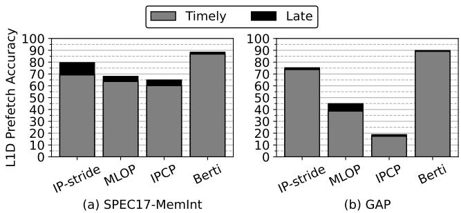

Berti: an Accurate Local-Delta Data Prefetcher 通俗讲解¶
0. 整体创新点通俗解读¶
痛点直击 (The "Why")
现有的硬件预取器（如 BOP、MLOP）有一个根本性的“难受”之处：它们用一个 global delta（全局偏移量）来指导整个程序的预取。这就像试图用一把万能钥匙去开一栋大楼里所有的门——在某些特定房间里（由特定指令 IP 访问的内存区域），这把钥匙可能完全无效，甚至会错过大量唾手可得的机会。
- 这种“一刀切”的策略在面对 多IP交织访问 的场景时尤其痛苦。例如，在
mcf这个 benchmark 中，多个不同的指令（IP）各自有自己独特的访问模式（local delta），但全局预取器只能看到一个混乱的混合地址流，最终选出一个对谁都“不太合适”的平均偏移量，导致 prefetch coverage（预取覆盖率）极低。 - 即便是先进的 IPCP 预取器，虽然它能按 IP 分类，但它主要关注 stride（步长，即连续两次访问的差值），并且 忽略了timeliness（及时性）。它可能准确地预测了下一个地址，但如果这个预取请求发出得太晚，数据在真正需要时还没到 L1D，那这次预取就是一次昂贵的浪费，甚至会污染缓存。
通俗比方 (The Analogy)
想象你是一个图书管理员（L1D cache），负责为一群教授（不同的 IPs）提前准备好他们下节课要用的书。
- 旧方法（Global Delta） 就像你观察所有教授借书的记录，然后算出一个“最受欢迎的书离当前书架第几排”，比如“+5排”。然后不管哪个教授来，你都去他当前书的+5排拿书。结果，物理教授需要的是隔壁的实验手册（+1排），而文学教授想找的是楼上的古籍（+10排），你的“+5排”策略对谁都没帮上忙。
- Berti 的做法 则是给每位教授建一个专属的小本子（per-IP history table）。这个小本子不仅记下他上次借了什么书（地址），还精确记下他下次课是什么时候（通过测量 fetch latency 来推算）。这样，当物理教授刚拿起一本基础教材时，你就知道必须立刻去+1排拿实验手册，否则就来不及了；而当文学教授翻到某一页时，你就知道可以悠闲地去+10排准备古籍。关键是，你只在他过去的行为反复证明这个动作有效（high coverage）时，才执行这个预取操作，避免白忙活。
 Figure 3. Best delta selected by BOP (based on global deltas) and Berti (based on per-IP local deltas) for mcf-1554B. Prefetch coverage is shown in grayscale. BOP selects +62 as the best delta (red line), which is not always accurate and provides a coverage of only 2%.
Figure 3. Best delta selected by BOP (based on global deltas) and Berti (based on per-IP local deltas) for mcf-1554B. Prefetch coverage is shown in grayscale. BOP selects +62 as the best delta (red line), which is not always accurate and provides a coverage of only 2%.
关键一招 (The "How")
Berti 的核心创新在于将 delta 的定义、学习和应用 全面 local化 和 timeliness-aware化，并通过一个简单的置信度机制保证高精度。
-
定义扭转：它没有沿用传统的 stride（连续访问差），而是定义了 local delta —— 同一个 IP 发出的任意两次需求访问之间的地址差。这极大地扩展了可发现的模式范围，不再局限于简单的等差数列。
-
学习机制扭转：最关键的一招是，它在每次 L1D 填充（fill）时，利用精确测量的 fetch latency（获取延迟），反向推算出“为了这次填充是及时的，预取请求应该在哪个历史时间点发出”。然后，它计算从那个“理想的触发点”到当前地址的差值，这就是一个 timely local delta。这个过程巧妙地将“及时性”这个模糊概念，转化为了一个可精确计算和学习的具体数值。
 Figure 4. Learning timely deltas.
Figure 4. Learning timely deltas. -
决策机制扭转：Berti 并不会对所有学到的 delta 都进行预取。它只为那些 coverage（覆盖率，即该 delta 在历史中成功触发及时预取的频率）超过特定阈值的 delta 才发出预取请求。这种“非高置信度不行动”的策略，是其实现 ~90% accuracy（准确率）的根本原因，直接解决了传统预取器产生大量无用流量、浪费带宽和能耗的顽疾。
最终，Berti 用仅 2.55 KB 的极小硬件开销，实现了性能和能效的显著提升，证明了在 L1D 层面，精细化、上下文感知的预取策略远比粗放的全局策略更为有效。
1. Local-Delta Learning¶
痛点直击 (The "Why")
- 传统的 global-delta prefetcher（如 BOP、MLOP）把所有内存访问混在一起找规律，这在现实程序里非常“难受”。因为一个程序里成千上万个指令（IP）各自有自己独立的访问模式，强行用一个“全局最优”的 delta 去预测所有访问，结果就是顾此失彼。
- 具体来说，在像
mcf这样的 benchmark 中，不同 IP 的访问模式完全不同。BOP 找到的全局 delta +62 对大部分 IP 根本无效，导致 prefetch coverage 只有 2%，几乎白忙活。 - 即便是先进的 L1D prefetcher 如 IPCP，虽然能按 IP 分类，但它关注的是 stride（连续两次访问的差值），而不是 delta（当前访问与历史上任意一次访问的差值）。这使得它无法处理非连续、乱序（out-of-order）或复杂的访问模式，灵活性不足。
Figure 3. Best delta selected by BOP (based on global deltas) and Berti (based on per-IP local deltas) for mcf-1554B. Prefetch coverage is shown in grayscale. BOP selects +62 as the best delta (red line), which is not always accurate and provides a coverage of only 2%.
通俗比方 (The Analogy)
- 想象你是一个图书管理员，负责给不同的教授提前准备好他们要借的书。
- Global-delta 方法 就像你只看整个图书馆的借阅排行榜，发现《量子力学导论》最火，于是就给每个教授都提前摆上这本书。结果，数学系的教授根本不需要它，而物理系的教授可能下周才需要，你上周就摆出来，占地方还容易弄丢。
- Local-delta 方法（Berti） 则聪明得多：你为每位教授单独建一个小本子，记录他过去每次来借了什么书，以及他下次来之前多久你需要把书准备好（timeliness）。你发现张教授每次借完《线性代数》后，两周后一定会来借《矩阵分析》，那么你就在他借《线性代数》时，立刻去库房把《矩阵分析》调出来。这个“两周后”对应的就是一个高覆盖、及时的 local delta。
关键一招 (The "How")
- 作者没有抛弃 delta 的核心思想，而是做了一个关键扭转：将 delta 的计算范围从“全局所有访问”缩小到“同一个 IP 的历史访问”。
- 更妙的是，Berti 不是简单地记录所有 local delta，而是引入了 timeliness 和 coverage 两个维度来筛选：
- Timeliness: 通过精确测量 L1D miss latency，反推出为了不错过下一次访问，必须在什么时候发出 prefetch 请求。只有那些能“赶得上”的历史访问，才会被用来计算 delta。
- Coverage: 统计每个 timely local delta 在历史中出现的频率。只有那些 coverage 超过阈值（如 65%）的 delta，才会被用来生成 prefetch 请求。
- 这个逻辑转换体现在硬件设计上，就是增加了两个核心结构：
- History Table: 按 IP 索引，记录该 IP 最近的访问地址和时间戳。
- Table of Deltas: 为每个 IP 维护一个 delta 列表，并动态更新其 coverage 和 prefetch 等级（L1D/L2/No）。
Figure 4. Learning timely deltas.
这种设计让 Berti 实现了惊人的效果：87.2% 的 prefetch accuracy，远超 IPCP (50.6%) 和 MLOP (62.4%)，同时将内存层次的动态能耗降低了 33.6%。
| Prefetcher | Avg. Accuracy (SPEC+GAP) | L1D Speedup vs. IP-Stride |
|---|---|---|
| IP-Stride | - | Baseline |
| MLOP | 62.4% | +5.0% |
| IPCP | 50.6% | +5.0% |
| Berti | 87.2% | +8.5% |
2. Timely Delta Detection¶
痛点直击
- 传统的 delta prefetcher（比如 BOP、MLOP）最大的问题在于，它们只关心“有没有用”，而不关心“来不来得及”。
- 它们会记录所有历史访问之间的地址差（deltas），然后选一个出现频率最高的 delta 来预取。但问题是，当你在地址 X 发生一次 cache miss 时，如果用一个很小的 delta（比如 +2）去预取 X+2，这个请求很可能是在你已经需要 X+2 的时候才发出的，结果就是 prefetch request 到达 L1D 时已经晚了，变成了 late prefetch，对性能毫无帮助，反而浪费了宝贵的 L1D bandwidth 和 DRAM energy。
- 更糟糕的是，在 out-of-order execution 的环境下，内存访问顺序会被打乱，基于连续 stride 的传统方法（如 IP-stride）很容易失效，而全局 delta 方法又无法区分不同指令（IP）的行为，导致 coverage 很低。
通俗比方
- 想象你在玩一个接球游戏。球（数据）从远处以不同的速度飞来。你的任务不是接到每一个球，而是提前判断哪个球会砸到你头上，并在它飞到一半时就伸手去接。
- 一个笨办法是：记录下过去所有球的落点间隔，然后下次看到一个球，就按最常见的间隔去猜下一个球的位置。但这忽略了球的速度！如果球飞得很快，你必须更早地伸手。
- Timely Delta Detection 就像是给每个球都装了一个计时器。当你被一个球砸中（L1D miss）时，你立刻回看录像：“如果我想提前接到这个球，我最早应该在哪个时间点、看到哪个位置的球时就出手？” 这个“出手时机”和“目标位置”的差值，才是那个真正 timely and useful 的 delta。
关键一招
- 作者并没有像以前那样，盲目地收集所有历史 deltas。他做了一个非常巧妙的因果倒推：
- 第一步：精确计时。利用 MSHR (Miss Status Holding Register) 和 PQ (Prefetch Queue) 中的 timestamp 字段，精确测量出每一次 L1D fill（无论是 demand 还是 prefetch 触发的）所花费的真实延迟（fetch latency）。
- 第二步：反向查找。当一次 demand miss 被处理完（fill 到 L1D）后，Berti 知道了这次访问花了多少个周期（latency）。于是，它立刻去查询由同一个 IP 产生的历史访问记录（History Table），找出那些发生时间足够早的访问——早到什么程度呢？早到“如果当时就用（当前地址 - 历史地址）这个 delta 发起预取，数据刚好能在我需要它之前到达 L1D”。
- 第三步：只学有用的。通过这种方式，Berti 学到的每一个 delta 都自带了 timeliness 属性。它只会去统计和使用这些“经过验证是及时的” deltas 的 coverage（覆盖率）。这从根本上保证了，当它用某个高 coverage 的 delta 发起预取时，这个请求几乎总是 timely and useful 的。
Figure 4. Learning timely deltas.
这张图完美诠释了这个过程。当访问地址 12 时，系统测得其 fetch latency 为 5 个周期。那么，一个 timely 的预取请求必须在时间点 T(12) - 5 之前发出。回溯历史，只有地址 2 的访问时间满足这个条件，因此 delta +10 (12-2) 被标记为 timely delta。而地址 7 和 10 的访问都太晚了，它们产生的 delta (+5, +2) 即使被用来预取，也会迟到，所以被直接忽略。这就是 Berti 实现 近 90% 准确率 的核心秘密。
3. Coverage-Based Prefetch Filtering¶
痛点直击 (The "Why")
- 传统的 delta prefetcher（比如 BOP 和 MLOP）最大的问题在于“盲目自信”。它们找到一个全局最优的 offset 或 delta，就不管三七二十一地到处用。这在访问模式简单、统一的程序里还好，但在现实世界中，尤其是像 GAP 这类图计算负载里，不同指令（IP）的访问模式千差万别。
- 结果就是，一个对 IP A 很好的 delta，用在 IP B 上可能完全错误，产生大量 useless prefetches（无用预取）。这些无用数据不仅浪费了宝贵的 L1D bandwidth 和 MSHR slots，还会污染缓存，把真正有用的数据挤出去，最终反而降低性能并大幅增加动态能耗。如 Figure 1 所示，现有方案的无用预取比例高得惊人。
通俗比方 (The Analogy)
- 想象你是一个图书管理员（Prefetcher），负责给不同的教授（IP）提前准备好他们可能要看的书（Cache Lines）。
- 老派的做法（全局 delta）是：你观察到整个图书馆借阅量最大的一本书是《量子力学导论》，于是你就疯狂地给每个教授的桌上都堆满这本书。结果，研究古典文学的教授对此嗤之以鼻，他的桌子被占满了，反而找不到自己要的《荷马史诗》。
- Coverage-Based Prefetch Filtering 的做法则聪明得多：你为每位教授单独建立一个小本本（Per-IP History）。每次教授成功借到一本书，你就在他的小本本上记下：“上次他看《A》的时候，紧接着就要了《B》，这个‘从A到B’的请求模式很有效”。经过一段时间，你发现对于教授 X，“从A到B”这个模式在他 65% 以上的借书请求中都出现了。这时你才确信，下次看到他看《A》，就可以放心大胆地把《B》提前放到他桌上。对于那些只出现过一两次的“奇怪”模式，你选择忽略，因为它们很可能是偶然的，不值得信任。
关键一招 (The "How")
- Berti 的核心创新在于，它没有直接用“哪个 delta 最近出现过”来决定是否预取，而是引入了一个 基于覆盖率的置信度过滤机制。
- 具体来说，它在原来的预取流程中，巧妙地插入了两个关键步骤：
- 第一步：精确计算 Coverage。对于每个 IP 学习到的每一个 timely delta，Berti 都会统计它在该 IP 的历史访问中“成功覆盖”了多少次未来的访问。Coverage = (该 delta 成功预测的次数) / (总的学习周期数)。这本质上是在衡量这个 delta 的稳定性和普适性。
- 第二步：设置 Confidence Watermarks。Berti 并不会对所有学到的 delta 都发出预取请求。它设定了严格的阈值（例如 >65% 为高置信度）。只有当一个 delta 的 coverage 超过这个高水位线时，Berti 才认为它足够可靠，值得用来生成预取请求。低于此阈值的 delta 会被直接过滤掉。
- 这个逻辑转换将预取决策从“我看到了什么”（reactive）转变为“我对什么有十足把握”（proactive & selective）。正如 Figure 10 所示，这一招让 Berti 的 prefetch accuracy 飙升至近 90%，远超 IPCP (50.6%) 和 MLOP (62.4%)，从而在提升性能的同时，显著降低了内存层次的动态能耗（Figure 15）。
 Figure 10. Prefetch accuracy at the L1D. Percentages of useful requests are broken down into timely (gray) and late (black) prefetch requests.
| Prefetcher | Avg. Accuracy (SPEC+GAP) | L1D Prefetches Filled in L1D |
|---|---|---|
| Berti | 87.2% | High-confidence deltas only |
| MLOP | 62.4% | Best global delta, less filtering |
| IPCP | 50.6% | Composite, but GS class adds noise |
4. Multi-Level Prefetch Orchestration¶
痛点直击
- 传统的硬件预取器（prefetcher）往往是个“愣头青”：一旦它觉得某个模式靠谱，就会一股脑地把数据往最顶层的 L1D cache 里塞。这在理想情况下很好，但在现实世界中会引发两个严重问题：
- 资源争抢 (Resource Contention)：L1D 的 MSHR (Miss Status Holding Registers) 和 Prefetch Queue (PQ) 资源极其有限。如果一个信心不足的预取请求占用了这些宝贵资源，可能会挤掉真正紧急的、由核心指令发出的需求请求（demand request），反而拖慢了整体速度。
- 无谓开销 (Wasted Effort)：如果预取的数据最终没被用上（低准确率），那么把它从内存一路搬到 L1D 所消耗的 带宽 和 能量 就完全浪费了。更糟糕的是，它还可能污染 L1D，把有用的数据挤出去。
通俗比方
- 想象你是一个高效的仓库经理（Berti），负责给前线工人（CPU Core）提前备货（数据）。
- 你的手下有不同的运输车队：
- L1D 车队：速度最快，但车少（MSHR/PQ 有限），而且只能停在离工人最近的“黄金停车位”（L1D）。
- L2 车队：速度稍慢，但车位多一些。
- LLC 车队：速度最慢，但仓库巨大。
- 以前的经理（如 IPCP, MLOP）的做法是：只要听说某件货可能有用，就立刻派最快的 L1D 车队去拉，不管这消息有多可靠，也不管停车场有没有空位。
- 你的新策略是：先评估这个消息的可信度（coverage）。如果可信度极高（比如90%），并且“黄金停车位”还有空（MSHR occupancy 低），那就派最快的 L1D 车队直达。如果可信度中等（比如50%），那就只送到 L2 仓库，这样既做了准备，又不占用最紧张的资源。如果可信度很低，干脆就不送，省下油钱（energy）和路权（bandwidth）。
关键一招
- Berti 的精妙之处在于，它没有采用“全有或全无”的粗暴策略，而是在预取决策流程中引入了一个动态分级调度机制。这个机制的核心是两个输入和一套watermark（水位线）规则：
- 输入1: Delta Coverage：衡量某个 delta 模式在过去成功预测需求的频率，代表其准确性。
- 输入2: L1D MSHR Occupancy：反映当前 L1D 处理单元的繁忙程度，代表资源压力。
- 基于这两个输入，Berti 动态决定预取请求的“投递地址”：
- 如果
Coverage > High-Watermark (65%)且MSHR Occupancy < Occupancy-Watermark (70%)，则预取到 L1D。 - 否则，如果
Coverage > Medium-Watermark (35%)，则预取到 L2。 - 否则，不进行预取。
- 如果
- 这个逻辑转换看似简单，但它巧妙地将预取的准确性和系统当前的资源状态耦合在一起，实现了在timeliness（及时性）、accuracy（准确性）和resource efficiency（资源效率）三者之间取得最佳平衡。论文中的 Figure 5 清晰地展示了这一决策流程是如何嵌入到硬件设计中的。
 Figure 5. Berti design overview. Hardware extensions are shown in gray.
Figure 5. Berti design overview. Hardware extensions are shown in gray.
这种策略直接带来了两大好处：
- 极高的准确率：通过高水位线过滤，只有最有把握的请求才能进入 L1D，避免了污染。如 Figure 10 所示，Berti 的准确率高达 87.2%，远超 IPCP (50.6%) 和 MLOP (62.4%)。
- 显著的节能效果：减少了无谓的数据搬运，使得内存层次结构的动态能耗大幅降低。如 Figure 15 所示，相比 IPCP，Berti 在 SPEC CPU2017 和 GAP 上分别节省了 21.1% 和 72.6% 的动态能耗。
5. Efficient Hardware Implementation¶
痛点直击 (The "Why")
- 传统的 L1D prefetcher 设计面临一个经典困境：存储开销（storage overhead）和性能收益之间难以平衡。L1D 空间极其宝贵，任何硬件结构都必须非常精简。
- 像 IPCP 这样的 SOTA prefetcher 虽然强大，但它内部集成了多个子模块（CS, CPLX, GS），逻辑复杂，其硬件实现虽然也小，但仍有优化空间。
- 更关键的是，很多 prefetcher 的训练和预测逻辑耦合紧密，需要复杂的计算单元（比如 perceptron 或 hash 计算），这不仅增加面积，还可能影响时序。
- Berti 的目标很明确：用极简的硬件（just 2.55 KB）实现高精度的 local-delta 预取，这意味着它的所有数据结构和逻辑都必须是“傻瓜式”的，只做最必要的事。
通俗比方 (The Analogy)
- 想象你是一个图书管理员（Prefetcher），你的任务是根据读者（IP）最近借过的书（addresses），预测他下一步会借什么书，并提前把书放到前台（L1D）。
- 以前的做法可能是给每个读者建一个复杂的兴趣模型（比如 IPCP 的分类器），或者记录整个图书馆的借阅流（global delta）。
- Berti 的做法更接地气：它只给每个读者维护两张便签纸。
- 第一张便签（History Table）就贴在读者档案上，简单记下他最近几次借了哪几本书以及借书的时间戳。
- 第二张便签（Table of Deltas）是他的“成功经验本”，只记录那些被证明能准确预测他下次借书行为的“书距”（delta），并且给每个“书距”打个分（coverage counter）。
- 整个过程没有任何复杂的推理，就是纯粹的经验主义：看到读者来借书，就翻翻他的“成功经验本”，如果某个“书距”得分够高，就按这个距离去书架上把下一本可能要借的书拿过来。
关键一招 (The "How")
作者并没有设计一个复杂的预测引擎，而是巧妙地将整个 prefetching 流程拆解为两个完全独立、极度简化的硬件表，并利用简单的计数和比较逻辑来驱动决策。
-
第一步：用最朴素的方式记录历史
- History Table 被设计成一个 8-set, 16-way 的缓存，直接用 IP 作为索引。
- 每个条目只存三样东西：IP tag、地址（VA）、时间戳。这是一个纯粹的“日志”结构，写入和查找都非常快，且完全在关键路径之外。
-
第二步：用计数器代替复杂模型来做决策
- Table of Deltas 是一个 16-entry fully-associative 表，同样用 IP（哈希后）作为 tag。
- 它的核心是一个 4-bit counter 和一个包含 16 个 delta 的数组。每个 delta 条目有自己的 4-bit coverage counter。
- 最关键的简化在于：覆盖度（coverage）的计算不是通过复杂的在线学习，而是通过一个周期性的相位重置（phase reset）机制。每当主 counter 溢出（达到16次搜索），就根据每个 delta 的 coverage counter 值（比如 >10 就是 65%+）来决定其状态（
L1D_pref,L2_pref,No_pref），然后清零所有计数器，开始新一轮的学习。 - 这个“计数-阈值-重置”的循环，用最廉价的硬件（几个加法器和比较器）就实现了对 delta “信心”的动态评估，完全避开了 perceptron 或复杂的 confidence calculation。
-
第三步：硬件开销的极致控制
- 所有操作都基于简单的整数加法（计算 delta）、比较（检查阈值）和计数。
- 没有乘法器、没有复杂的 ALU、没有庞大的 CAM。
- 正如论文中的 Table I 所示，整个设计的存储开销被精确地控制在 2.55 KB。
 Table I STORAGE OVERHEAD OF BERTI.
Table I STORAGE OVERHEAD OF BERTI.
这种设计哲学就是：用空间换逻辑的极度简化。它牺牲了一定的理论最优性（比如无法捕捉极其复杂的模式），但换来了在 L1D 这个寸土寸金的地方几乎可以忽略不计的硬件成本和极高的能效比，而这正是工业界最看重的。